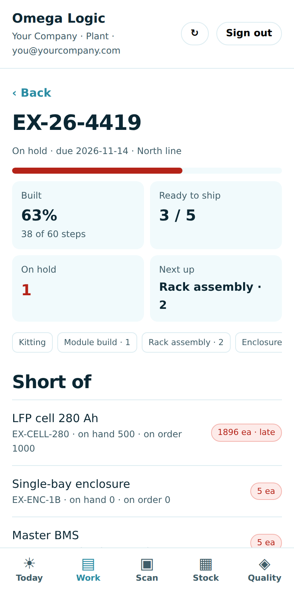
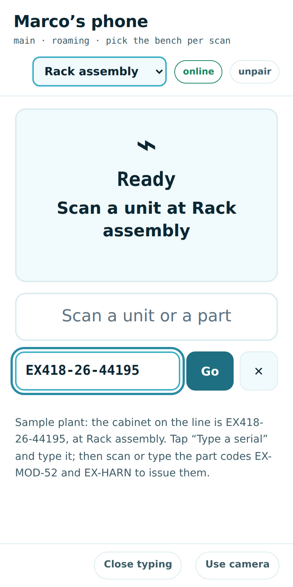
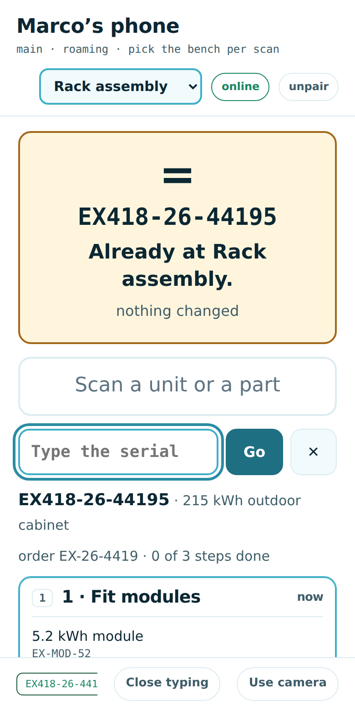
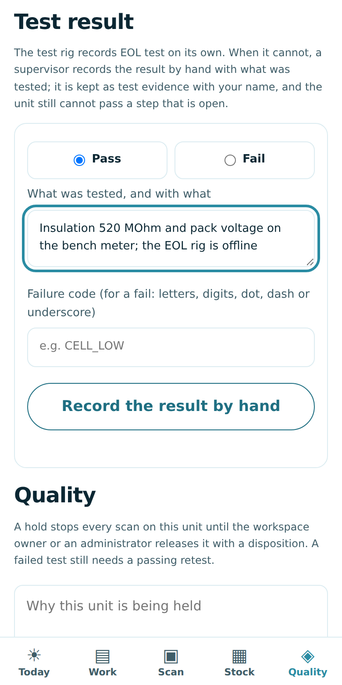
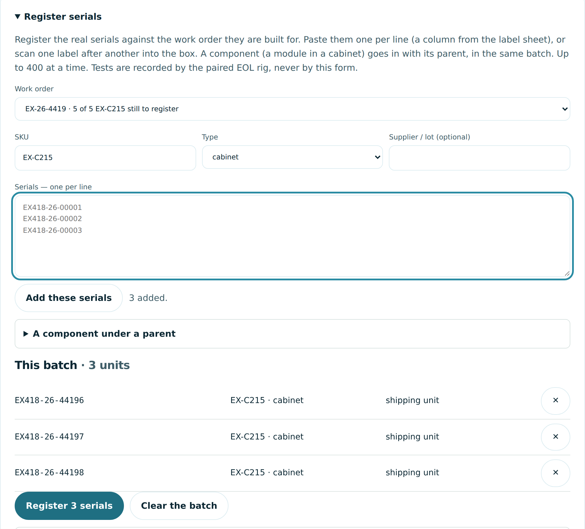
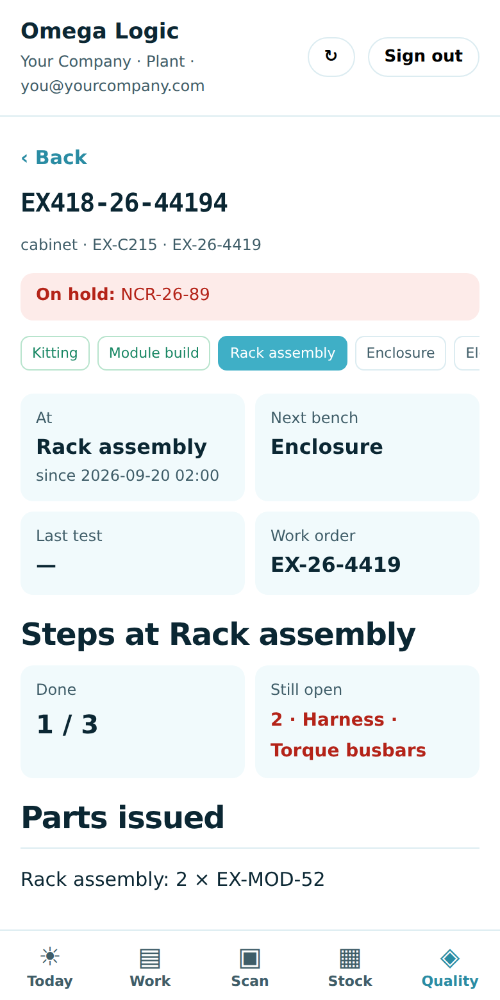

The Plant app
Omega Logic on the builder's phone: work orders, every unit and its step, the bench scanner, stock, quality holds and, for a supervisor, a test result by hand.
1. What it is and where it lives
| What | Address | Sign in |
|---|
| Plant app | silmarillion.clearskyomega.com/plant/app?org=yourcompany.com
(?org= is your company's email domain; the link your office sends already has it) | your work Google account, or your work email and password |
| Bench scan station | silmarillion.clearskyomega.com/plant/station.html, or Scan → Open the scanner in the app | a station credential from Work orders & registration, pasted once |
| Registering serials | the desktop: Work orders & registration (/plant/?org=yourcompany.com) | the same sign-in as the Omega Logic app |
Nothing lives only on the phone. The app reads and writes the same work orders and unit records as the plant board and the office, through the same signed-in endpoints, so a scan at a bench is on every other screen the moment it is saved.
2. Put it on your phone and sign in
It is a web app: nothing to download from a store, and every update reaches the phone the next time it is opened. Open the address once from the link the office sends; the app remembers your company after that. Sign in with your work Google account, or your work email and password (Forgot password? sets one). If you work for more than one company it asks which one to open. Sign out also forgets the company. Your owner or an administrator adds you to the workspace on Team.
iPhone or iPad (Safari)
- Open Safari and go to the link your office sent.
- Tap the menu button at the left of the address bar (iOS 27) or ••• at the right (iOS 26), then Share. See a Share button (the square with the arrow)? Just tap that.
- Swipe up on the sheet or tap View More, then Add to Home Screen.
- Leave Open as Web App on and tap Add. No switch? Older iOS: just tap Add.
- Open it from the Home Screen from now on and sign in there once: it keeps its own sign-in, separate from Safari. Continue with Google goes to Google and comes back to the app; or use your work email and password. There is no emailed link in the installed app (it would open in Safari). It opens full screen as Omega Logic, ClearSky's app, with your company's workspace inside.
Android (Chrome)
- Open Chrome and go to the link your office sent.
- Tap ⋮ at the right of the address bar, then Install and create shortcut (older Chrome: Install app or Add to Home screen).
- Tap Install, not Create shortcut.
- Open it from its icon, with your other apps, and sign in: Google, or your work email (a sign-in link by email, or Use a password instead).
3. The five tabs
- Today: open work orders, late, with holds, mine; today's scans, units that reached Ready, refusals, test fails; needs a person (held, stuck, failed, quiet benches, tap to open); Scan at a bench.
- Work: every open work order, late first, with All / Mine / Late / Holds / Ready filters. Tap one: stage, target, built %, ready units, holds, next operation, what it is short of, every unit with its bench and step progress.
- Scan: Open the scanner for the bench screen (below). Paired once as a roaming phone, you pick the bench you are at on each scan. Find a unit looks up any serial.
- Stock: finished units by product (on the shelf, on orders, being built for stock, held), counted over every unit; the parts short for the open work; and the parts no bench issues, which come off the shelf when a unit reaches Ready.
- Quality: units on hold. Open one to place a hold with the reason, or release it with the disposition (the owner or an administrator; everyone else sees who can). A hold stops every scan on that unit until it is released. Once a unit has shipped, its record shows After the plant: where it is now, which site it went to, and a link to its custody passport.

Work order: built %, ready units, holds, what is short, every unit's step
The bench: scan, type or use the camera
- In the app, Scan → Open the scanner. A roaming phone picks the bench you are at, top right. (Not paired yet? See section 7.)
- Scan the unit's label with a scanner gun, or tap Use camera and point the phone at it (QR, Data Matrix or Code 128; the first time, tap Allow). A damaged label, or no scanner: tap Type a serial, type it, tap Go (or Enter).
- The screen shows this bench's steps for the unit, with each part and quantity. Scan a part's label or type its code, or tap Issue, to take it off stock and onto the unit; a lot number travels with it. A check step gets Done.
- When every step is done the bench names the next one. The next bench refuses the unit while anything here is still open, and says what.
Scans queue when the yard has no signal and send when it returns. ‹ Plant app, top left, takes you back. unpair asks first: the token is shown only once.

Type a serial: for a label that will not scan
The unit at this bench: its steps and parts4. A test result by hand (supervisor)
The EOL test rig records its result on its own, and that stays the normal way. When the rig cannot (it is down, or not connected yet), the workspace's owner or an administrator records the result by hand. Everyone else sees who can.
- Open the unit: Scan → Find a unit, or tap it on a work order. The Test result box shows when the unit is at the bench just before the test, or at the test.
- Choose Pass or Fail.
- Write what was tested, and with what (at least 5 characters): "Insulation 520 MΩ on the bench meter; tester offline".
- For a fail, a failure code: letters, digits, dot, dash or underscore (a space becomes an underscore: low insulation is LOW_INSULATION).
- Tap Record the result by hand.
What it keeps, and what it never does. The result is the unit's test evidence, marked by hand, with your name, the time and your note, and it is audited. It goes through the same gate as the rig: a pass, by hand or by the rig, never takes a unit past a step still open at the bench it is leaving; the app says which step. A fail holds the unit (Test failed (recorded by hand)) until a passing retest. The same form is on the unit's serial record on the desktop.

Record the result by hand: Pass or Fail, what was tested5. Registering serials (desktop)
Serials are the real ones off the labels, registered against the work order they are built for: on the desktop, Work orders & registration → Register serials (a work order's own + Register serials opens it with that order chosen).

Register serials: the work order chosen, the serials pasted one per line, the batch as rows
- Choose the work order. While an order is waiting for serials nothing is chosen for you; finished stock is there to choose on purpose.
- Check the SKU (filled in from the order) and the type.
- Paste the serials, one per line (a column from the label sheet), or scan one label after another into the box. Tap Add these serials. A component (a module in a cabinet): A component under a parent; Enter adds it and clears the box for the next scan.
- Check This batch: one row per serial; ✕ takes a row out. Then Register.
Typed one wrong? Open its record (Find serial record). Until the floor has scanned it, the owner or an administrator can correct it (type the right serial: it takes the place, components and all) or void it (leave that blank: its place is freed), with a reason. The mistake is kept, marked void, and refused at every bench.
6. How it links to the main system
- The office's owner or an administrator accepts an order on the desktop (ClearSky, for an order billed through ClearSky's QuickBooks); when the deposit is paid it is released and a work order exists. It appears on the Plant app's Today and Work tabs.
- Serials are registered against it (section 5). The builders build bench by bench with the scanner, issuing parts as they go; parts no bench issues come off the shelf when the unit reaches Ready. The materials plan nets what was issued; Stock shows what is short.
- A unit that passes its test and reaches Ready is finished stock. The office assigns it to an order from the Omega Logic app, or the plant built it for one already.
- ClearSky records the shipment on the desktop. From then on the unit's custody chain starts: in transit, received, assigned to the customer's site, commissioned. The Plant app shows that under After the plant on the unit, and the customer sees it on their phone.
- Every unit's full record (plant trace, tests, scans, custody chain, warranty) is one passport on the desktop: silmarillion.clearskyomega.com/logic-custody?org=yourcompany.com.
Your apps. Today in the Plant app links to the Omega Logic app and the bench. One account, one record: what you build here is what the office ships and the customer places at a site.

A unit: where it is at the plant, steps, scans, quality7. If something looks wrong
- "Open the app once from your office link so it knows your workspace": open the link your office sent once (it ends in
?org= and your company's email domain).
- "No workspace at…" after sign-in: your email is not on the workspace yet. Ask your owner or an administrator to add you on Team.
- Stale or offline: close the app fully and open it again (updates arrive on the next open). Offline, it says so at the top; the bench keeps its scans and sends them when the signal returns.
- The bench says it is not paired: a plant administrator creates a Roaming phone credential on the desktop (Work orders & registration → Pair a scanner or EOL rig); paste its station ID and token once on the bench screen (the token is shown only once).
- The camera does not open: allow it (iPhone: Settings → Apps → Safari → Camera) and tap Use camera again, or tap Type a serial.
- Questions: your workspace owner or an administrator, then ClearSky Energy Solutions, dev@clearsky-usa.com. The office's guide is in the Omega Logic app under Menu → Help & guides.